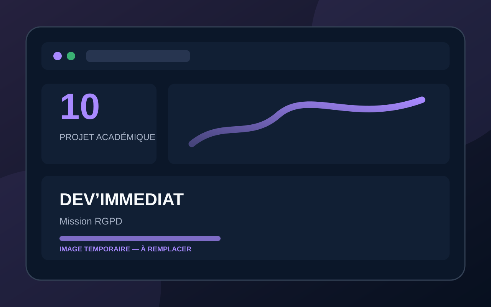

Étude de cas
Dev’Immediat — Mission RGPD
Mise en conformité d’une extraction CRM par anonymisation, minimisation et documentation.

Présentation et contexte
Dev’Immediat avait été sanctionnée par la CNIL. L’entreprise devait appliquer rapidement le RGPD tout en maintenant la capacité de travail de l’équipe commerciale.
Objectif
Anonymiser les données CRM, limiter l’accès aux tarifs et formaliser les règles nécessaires à la conformité.
Besoin ou problème
L’entreprise devait poursuivre ses analyses sans traiter de données personnelles ni diffuser d’informations sensibles.
Résultat attendu
Une extraction anonymisée et documentée, accompagnée de recommandations de conformité.
Mon rôle et mes réalisations
J’ai sélectionné les données utiles, défini les transformations, réalisé l’anonymisation dans Power Query et documenté chaque étape.
Principales fonctionnalités
- Minimisation
- Anonymisation
- Suppression des tarifs
- Contrôles qualité
- Extraction CSV
- Documentation RGPD
Outils et technologies
Compétences mobilisées
- RGPD
- Gouvernance
- Anonymisation
- Préparation
- Qualité
- Documentation
Savoir-être exploités
- Responsabilité
- Discrétion
- Rigueur
- Esprit critique
Livrables principaux
Cinq recommandations RGPD, extraction CSV anonymisée et rapport.